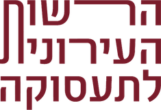

המפה שלךלמפה המלאה ←
לחצו על תחנה כדי לעבור אליה
חיפוש עבודה זה דבר מציף:
עשרות אתרים, עשרות תפקידים שיכולים
להיות רלוונטיים, אז איך למקד את עצמי?
מה לעשות קודם?
שדרוג קורות החיים, לינקדאין, נטוורקינג,
האם אני עושה את הדברים הנכונים?
האם אני בקצב הנכון?
כיום לחפש עבודה זה לא מה שהוא היה לפני שנתיים -שלוש,
יש דברים שכבר כדאי לעשות אחרת כדי להגיע להזדמנויות.
אז הכנו לך מדריך שיעזור לך להפוך את חיפוש העבודה לברור וממוקד יותר.
שנצא לדרך?
המפה מחכה לך למטה ↓
